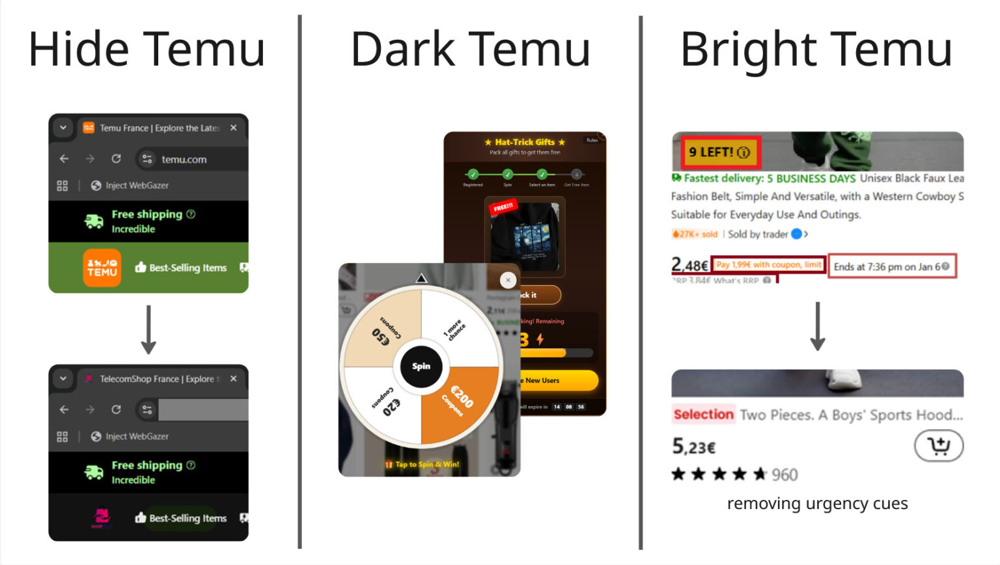

Dark Patterns
on Temu
A controlled study of how manipulative e-commerce interfaces shape attention, perceived pressure, and purchase decisions, and whether the patterns people notice most are also the ones that influence them most.

Overview
Twenty participants were randomly divided between two versions of a redesigned French Temu interface. The treatment condition amplified five dark patterns, while the control condition removed them. Each participant completed the same simulated shopping task, purchasing an air fryer within a €90 budget without making a real payment.
The study combined post-task questionnaires, interaction logs, screen recording, click tracking, eye tracking, and think-aloud observation. Results showed that obvious pop-ups were considered the most annoying and manipulative but the least influential, while misleading discounts and fear-of-missing-out cues were perceived as subtler yet more influential. Perceived fake or deceptive information was the only statistically significant condition difference.
To collect gaze data outside a normal browser tab, WebGazer is adapted into a full-screen Electron overlay.